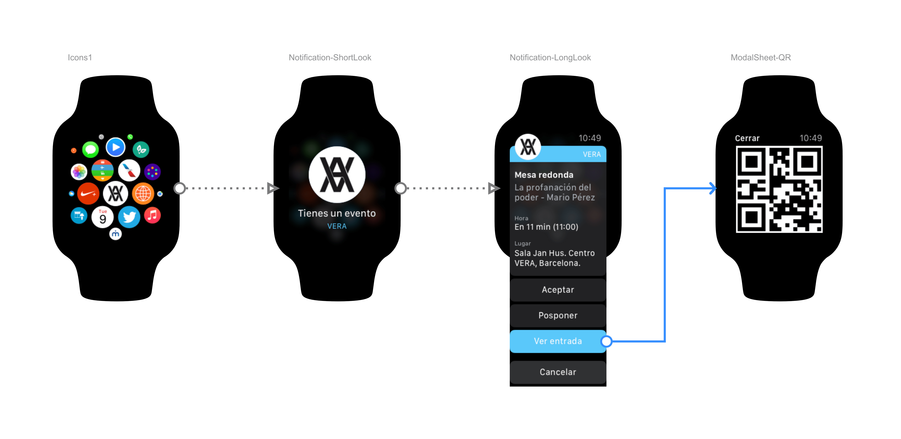

VERA was born as an atheist community whose main purpose is the pursuit of knowledge. It explores the duality between humanity and nature. In science, truths are never absolute — they are always open to refutation. This project works in the same way. I invite you to reflect, to learn more, to research, and to critique my designs.
System notification

App flows